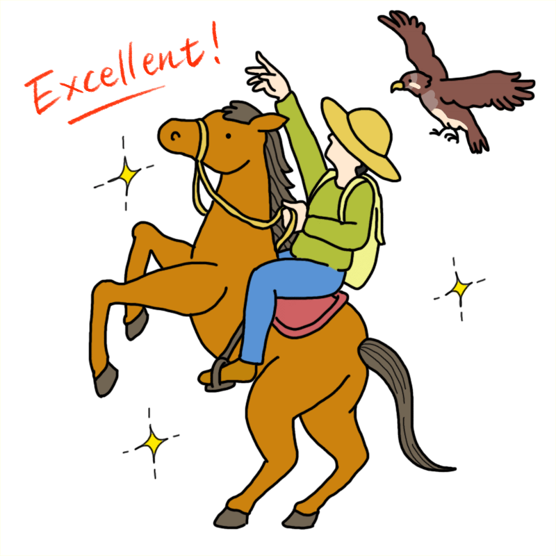

難しい手続き達成！
おめでとう！

いかがでしたか？どこを押せばいいかわからなかったり、入力しづらかったり、間違えたり…様々なトラブルを体験したことでしょう。
このようなトラブルは、認知症のあるなしに関わらず私たちの生活の様々な場面で起きています。人の認知機能やこれまでの習慣などが考慮された認知症のある方に優しいデザインは、このようなトラブルを減らし、誰もが使いやすく行動しやすい環境をつくることができます。
ここでは、書籍『認知症世界の歩き方 実践編』のなかで登場する「認知症に優しい生活環境デザイン4原則」の考え方を踏まえて、これまでの手続きで起きたトラブルを解説します。
trouble｜次のページへ進めない

ぱっと注意を引かれ「押す」という行動を誘発するボタンが間違った導線になっていることや、青色の文字・下線といった、従来リンクを意味する文字がボタンになっていないことにより、どこから進めば良いのかがわからなくなります。
trouble｜ダイアログが閉じられない

右上に×ボタンが見当たらず、見慣れないマークを押してみるとくるりと回転してしまう。ここでは、右上のボタンで閉じるという慣れ親しんだ操作ができず、さらに大切な「Close」ボタンが背景と同化して見つけづらいことにより、操作がわからなくなります。
trouble｜予約日を間違えそうになる

明治時代にタイムトリップするかのような過去の年から始まり、曜日は自動入力されません。また、復路出発日の方は、少しの差で間違えてしまいます。入力するものに適した設定・デザインでないことにより、誤入力の可能性が高まります。
trouble｜なかなか選択肢を選べない

順不同に並ぶ選択肢が入力者を惑わせます。普通、「大人１人の場合子供１人・２人・３人、次に大人２人の場合は…」というように、選択肢を一定のルールを元に並べ、見分け・選択しやすくします。しかし、そのようなルールがないことで、途端に選択が難しくなります。
trouble｜チェックボックスがどれを指すかわからない

人は距離が近いものを仲間・同じグループ・関係性のあるものとして認識します（近接の法則）。そのため、適切な距離感・余白がないデザインは、情報を適切なまとまりとして認識することが難しくなります。
trouble｜入力に戸惑う

名前は「姓」「名」の順番、名前の読み仮名は「ふりがな」表記の場合は平仮名で、「フリガナ」表記の場合はカタカナで入力するという暗黙のルールが崩れているため、入力に戸惑い混乱を招きます。
trouble｜選択肢の理解に時間がかかる

意味は間違っていませんが、記号・絵文字・言語という異なるものが、比較対象として並んでいることにより混乱を招きます。使用する状況や伝えたい内容に合わせて、記号・絵文字・言語を正しく使い、直感的に伝わりやすくすることが大切です。
trouble｜入力に手間取る・時間がかかる

入力情報に対して入力スペースの形状が不向きであることが、使いづらさの原因となっています。また、まとまりで記憶している電話番号を分解して入力しなければならず、誤入力の可能性が高まります。
trouble｜適切なものが見つけられない

メールアドレスの選択肢として不適切なものが含まれていることにより、誤入力の可能性が高まります。また、戻って選択できないため、何度もクリックしてしまいます。
trouble｜言葉の概念が曖昧で選択に迷う

「果物」という概念が曖昧なため、選択を迷わせます。私たちは、抽象的な概念やカテゴライズを持っていて、それらを元に会話をしたりものを整理したりしています。その概念が曖昧な時、途端に選択・分類することが難しくなります。
trouble｜カウントダウンに急かされ焦る

入力の途中に、突如制限時間が表示され、視界が狭まり、行動を妨げます。十分な時間や空間がないことは、人を急かし焦らせ、ミスを誘発したり、適切な判断を難しくさせたりします。
trouble｜今どこにいるのかわからない

進捗を表すサインのルールが一目でわからず、一体、今どのページにいるのかわからなくなります。情報が直感的に伝わりにくいデザインは、その意味を理解できず、混乱を生みます。
trouble｜読みたくても読めない

スクロールのスピードが内容を読む速さと合っていないことにより、読むことが困難になります。行動する時に十分な時間がないことは、自分が思った通りの行動をとることを難しくさせます。
trouble｜スムーズに次のページへ進めない

１度目は、「次へ」ボタンが右下でじはなく左下にあることにより、誤タップを誘発します。人の目線は、左上→右下に向かう傾向があること（グーテンベルク・ダイアグラム）や、時間経過を表す時は左→右に進むよう表現されることなどに沿っていないことが原因です。
２度目は、「次へ」ボタンの位置が前のページと変わっています。位置・レイアウト・デザインなど、情報の掲示方法が統一されていないことにより、慣れ親しんだ手続きが難しくなり、誤タップを誘発します。
３度目も、これまでのボタンと言葉・デザインが統一されていないことにより混乱を招きます。また、「確認する」のボタンは、影や光が反射したような色合いで、視認性が低下します。
trouble｜選択することが不安になる・迷う

注意マークと赤色の文字が危険な印象を与え、確認しても良いのか不安を感じるとともに、選択肢には「Accept」と「OK」という同じ意味の言葉があることにより、選択を迷います。この場合、「確認する」など具体的な行動がボタンに記載されている方がわかりやすくなります。